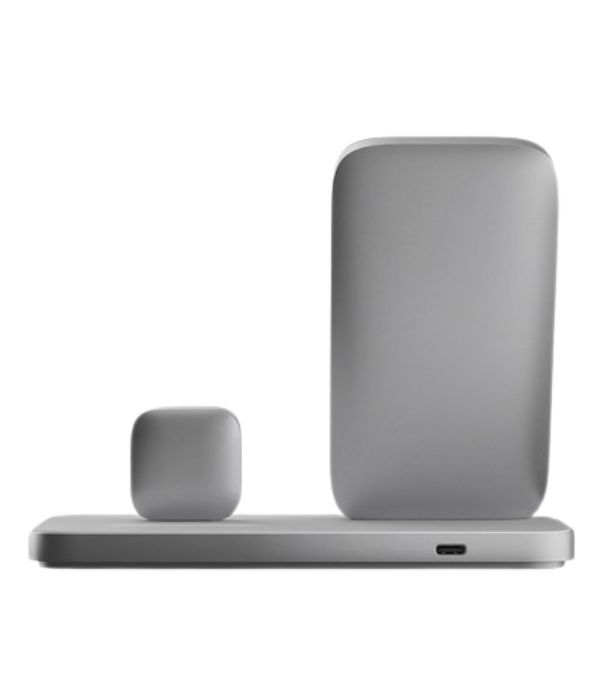
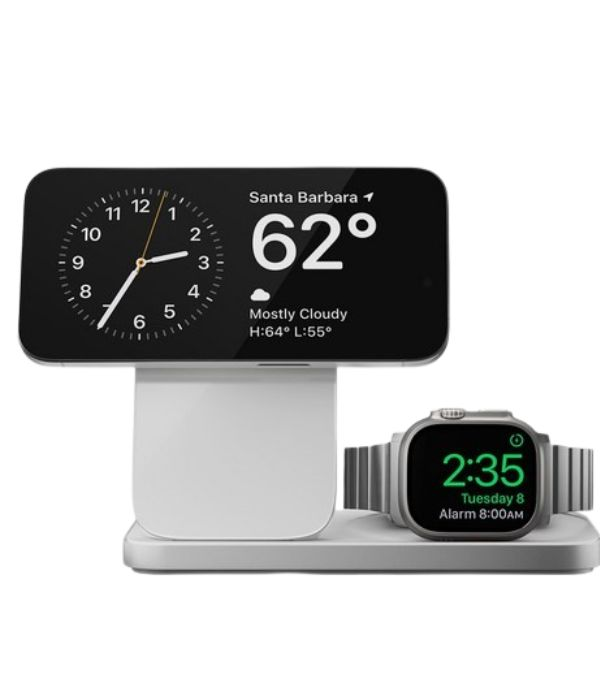
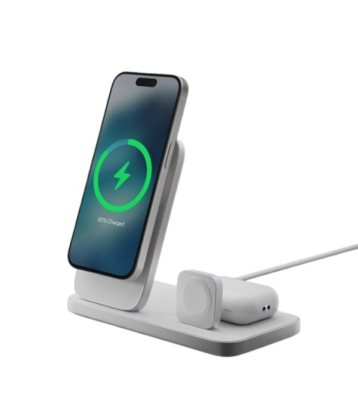

타협 없는 소재와 완벽한 고속 무선 충전, 노매드 베이스 원 맥스 3-in-1
노매드 베이스 원 맥스는 흔한 액세서리가 아닌, 책상 위의 조각상에 가깝습니다. 약 1kg에 달하는 압도적인 무게감의 아연 합금 바디와 프리미엄 글래스 상판 설계는 아이폰을 들어 올릴 때 충전기가 바닥에 단단히 고정되도록 유도합니다. 정식 애플 맥세이프(MagSafe) 및 워치 패스트 차징 인증을 획득하여 안심하고 초고속 무선 충전을 만끽할 수 있습니다.



스마트 가젯 기기들이 일상화되면서 단순한 기능 충족을 넘어, 데스크 공간의 심미적 가치를 극대화하는 프리미엄 오브제에 대한 수요가 급증하고 있습니다. 미국의 가죽 및 하이엔드 액세서리 명가 노매드(Nomad)가 선보인 베이스 원 맥스 3-in-1(Base One Max) 무선 충전 스테이션은 시중의 가벼운 플라스틱 거치대들이 주는 고질적인 폐인 포인트를 물리 법칙과 타협 없는 최고급 소재 공학으로 극복한 마스터피스입니다.
기존 무선 충전 거치대들의 가장 큰 불편함은 스마트폰을 뗄 때 자력 때문에 본체까지 함께 들려 두 손을 모두 사용해야 한다는 점이었습니다. 노매드는 이 문제를 무게 배분이라는 직관적인 물리학으로 해결했습니다. 무려 1,000g에 달하는 고밀도 아연 합금 메틸 베이스와 프리미엄 프리미엄 인더스트리얼 글래스를 상판 전체에 적용하여, 자석 결합력이 강한 맥세이프(MagSafe) 환경에서도 아이폰만 부드럽게 한 손으로 들어 올릴 수 있는 묵직한 안정감을 구현했습니다.
성능 면에서도 애플의 엄격한 MFi(Made for iPhone/Watch) 인증 프로토콜을 완벽하게 충족합니다. 가짜 맥세이프 제품들이 7.5W에 머무는 것과 달리 오리지널 15W 무선 고속 충전을 안전하게 분사하며, 애플워치 고속 가열 마그네틱 모듈을 수직 형태로 빌트인하여 가시성을 높였습니다. 후면에는 최고급 카본 가죽으로 마감된 에어팟(AirPods) 전용 무선 팟을 배치하여 아이폰, 애플워치, 에어팟 3가지 핵심 디바이스를 단 하나의 USB-C 포트로 우아하게 동시 제어하는 최고의 생산성 데스크테리어를 완성합니다.